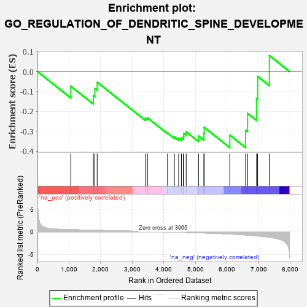
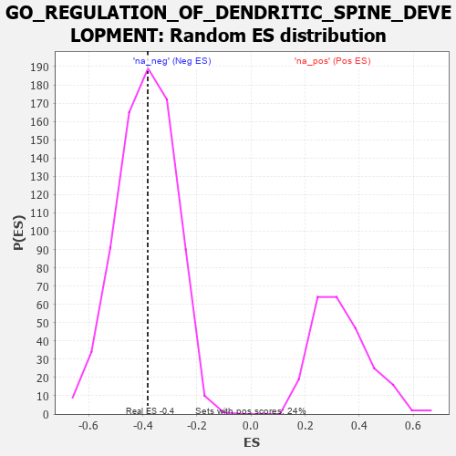

| | | Dataset | 7d |
| Phenotype | NoPhenotypeAvailable |
| Upregulated in class | na_neg |
| GeneSet | GO_REGULATION_OF_DENDRITIC_SPINE_DEVELOPMENT |
| Enrichment Score (ES) | -0.38171515 |
| Normalized Enrichment Score (NES) | -0.97852385 |
| Nominal p-value | 0.5124836 |
| FDR q-value | 0.898502 |
| FWER p-Value | 1.0 |
Table: GSEA Results Summary

Fig 1: Enrichment plot: GO_REGULATION_OF_DENDRITIC_SPINE_DEVELOPMENT
Profile of the Running ES Score & Positions of GeneSet Members on the Rank Ordered List
| PROBE | GENE SYMBOL | GENE_TITLE | RANK IN GENE LIST | RANK METRIC SCORE | RUNNING ES | CORE ENRICHMENT | | 1 | MEF2C | | | 1054 | 0.473 | -0.0735 | No |
| 2 | LLPH | | | 1768 | 0.343 | -0.1204 | No |
| 3 | FMR1 | | | 1816 | 0.334 | -0.0845 | No |
| 4 | PAK3 | | | 1889 | 0.322 | -0.0534 | No |
| 5 | KIF1A | | | 3415 | 0.088 | -0.2343 | No |
| 6 | CDK5 | | | 3480 | 0.080 | -0.2323 | No |
| 7 | MTOR | | | 4114 | -0.025 | -0.3088 | No |
| 8 | OPA1 | | | 4330 | -0.065 | -0.3277 | No |
| 9 | LRRK2 | | | 4467 | -0.087 | -0.3339 | Yes |
| 10 | ABI2 | | | 4554 | -0.106 | -0.3315 | Yes |
| 11 | DLG5 | | | 4619 | -0.121 | -0.3244 | Yes |
| 12 | SDK1 | | | 4627 | -0.124 | -0.3099 | Yes |
| 13 | ARF6 | | | 4704 | -0.140 | -0.3020 | Yes |
| 14 | ITSN1 | | | 5094 | -0.222 | -0.3231 | Yes |
| 15 | PTEN | | | 5262 | -0.261 | -0.3115 | Yes |
| 16 | EPHA4 | | | 5273 | -0.265 | -0.2797 | Yes |
| 17 | DBNL | | | 6084 | -0.501 | -0.3191 | Yes |
| 18 | ARF1 | | | 6583 | -0.701 | -0.2942 | Yes |
| 19 | PTPRS | | | 6646 | -0.738 | -0.2098 | Yes |
| 20 | LRP8 | | | 6931 | -0.889 | -0.1345 | Yes |
| 21 | DNM1L | | | 6963 | -0.913 | -0.0244 | Yes |
| 22 | NGEF | | | 7335 | -1.209 | 0.0800 | Yes |
Table: GSEA details [plain text format]

Fig 2: GO_REGULATION_OF_DENDRITIC_SPINE_DEVELOPMENT: Random ES distribution
Gene set null distribution of ES for GO_REGULATION_OF_DENDRITIC_SPINE_DEVELOPMENT